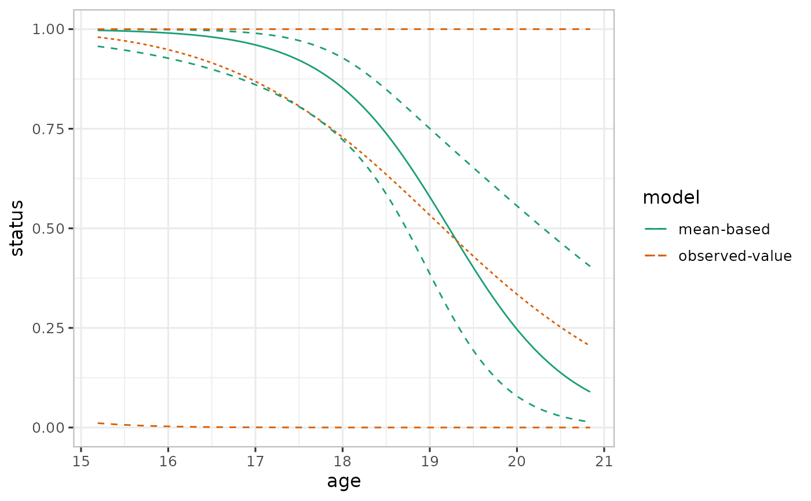
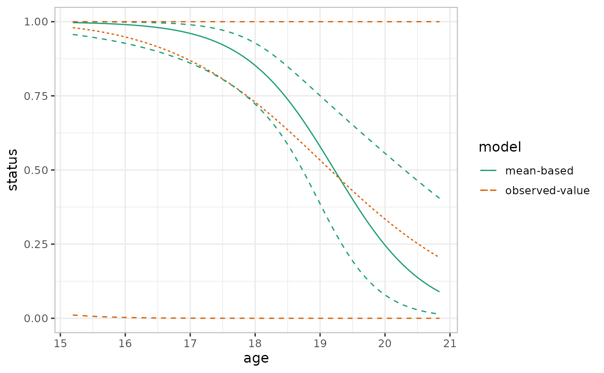

Prediction and effect estimates
varpred.RdComputes predictor effect for generalized linear (mixed) models together with the associated confidence intervals anchored on some values, mostly, model center. It also incorporates proaches for correcting bias in predictions for GL(M)Ms involving nonlinear link functions.
Usage
varpred(
mod,
focal_predictors,
x.var = NULL,
type = c("response", "link"),
isolate = TRUE,
isolate.value = NULL,
level = 0.95,
steps = 100,
at = list(),
dfspec = 100,
true.beta = NULL,
vcov. = NULL,
internal = FALSE,
avefun = mean,
offset = NULL,
bias.adjust = c("none", "delta", "observed"),
sigma = NULL,
include.re = FALSE,
modelname = NULL,
returnall = FALSE,
...
)Arguments
- mod
fitted model object. See details for supported class of models.
- focal_predictors
a character vector of one or more predictors. For models with interaction, the marginal predictions are obtained by specifying the corresponding predictors together. For example
~x1*x2is specified asc("x1", "x2")to obtain the predictor effect forx1while holdingx2andx1:x2at their typical values. If no interactions are present in the model, specifying more than one predictors compares predictions between the predictors.- x.var
a character specifying the predictor to define the x variable (horizontal axis on the plot). The default is
NULL, of which the first predictor infocal_predictorsis used.- type
a character specifying the desired prediction.
type = "response"applies inverse transformation, if exists.type = "link"requests the results as a linear predictor.- isolate
logical. If
TRUE, theCIsare anchored around the mean value ofx.var, i.e., centered model matrix. By default, it is the deviation of each of the variables in the model matrix from its mean but other values can be specified throughisolate.value.- isolate.value
numeric (default
isolate.value = NULL). Ifisolate = TRUE, otherwise ignored, is the deviation from the mean ofx.var.- level
desired confidence interval for computing marginal predictions. Default is
0.95.- steps
number of points to evaluate numerical predictors in
focal_predictors. The default is100. Unique levels offocal_predictorsare used in the case categorical predictors.- at
default
NULL. Otherwise, is a namedlistspecifying points to evaluatefocal_predictors. The names in the list should match the names used infocal_predictors.- dfspec
default
100. Specified degrees of freedom for model which do not returndf. This is used in computation of confidence intervals.- vcov.
a function or a matrix. If a function, it is used to compute the variance-covariance matrix of the model coefficients. The function should take model as it's first (or maybe only) argument. A matrix of variance-covariance matrix of the estimated coefficient can also be used. Otherwise
vcov(mod)is used internally. Specifyingvcov.is important when "anchored" CIs are required. However, with this approach, the predictors should be properly scaled, for example, scaled. isolate=TRUE centers at the mean of the model matrix without requiring the scaled input predictors. See examples.- internal
logical. If
TRUE, the entries of the non-focal predictor (see x.var) in the variance-covariance matrix are internally zeroed-out usingzero_vcov. Default isFALSE.- avefun
the averaging scheme (function) to be used in conditioning non-focal predictors. Default is
mean.- offset
a function or a value (FIXME:).
- bias.adjust
specifies the bias correction method. If "none" (default), no bias correction method is applied; if "delta", delta method is used; if "observed", all the values of non-focal predictors are used; otherwise, if "quantile", quantiles of non-focal numerical predictors are use. The options "quantile" and "observed" (both EXPERIMENTAL) are used for bias correction in GL(M)M models involving non-linear link functions.
- sigma
standard deviation used in delta method (only if
bias.adjust="delta").- include.re
logical. If
TRUE, the random effects components of mixed models is included.- returnall
logical. If
TRUE, all other named computed quantities are also returned. Otherwise, only predictions are returned.- character
string naming the predictions. Useful when comparing several predictions.
Details
Predictor effects computes E(Y|X) by meaningfully holding the non-focal predictors constant (or averaged in some meaningful way) while varying the focal predictor, with the goal that the response (E(Y|X)) represents how the model responds to the changes in the focal predictor.
The traditional way to compute variances for predictions is \(\sigma^2 = \textrm{Diag}(\bX^\star \Sigma \bX^{\star\top})\), so that the confidence intervals are \(\eta \pm q\sigma\), where \(q\) is an appropriate quantile of Normal or t distribution. This approach incorporates all the uncertainties -- including the uncertainty due to non-focal predictors. But what if we are only interested in the uncertainty as a result of the focal predictor, so that the confidence intervals are \(\eta \pm q \sigma_f\) (what we call anchored CIs)? There are two ways to anchor CIs: variance-covariance matrix based which requires properly scaled input predictors prior to model fitting; and centered model matrix which is more general and does not require scaled input predictors prior to model fitting.
Currently, the package supports lm, glm, lme4 and glmmTMB models.
Examples
# Set theme for ggplot. Comment out if not needed
varefftheme()
set.seed(101)
N <- 100
x1_min <- 1
x1_max <- 9
b0 <- 0.3
b1 <- 0.1
b2 <- -0.6
b3 <- 0.01
x2_levels <- factor(c("A", "B", "D"))
df <- expand.grid(x1u = runif(n=N, min=x1_min, max=x1_max)
, x2u = x2_levels
)
X <- model.matrix(~x1u + x2u, df)
betas <- c(b0, b1, b2, b3)
df$y <- rnorm(nrow(df), mean= X %*% betas, sd=1)
df2 <- df
df <- transform(df
, x1c = drop(scale(x1u, scale=FALSE))
)
head(df)
#> x1u x2u y x1c
#> 1 3.977587 A -0.4524966 -1.222599
#> 2 1.350599 A 0.1605887 -3.849588
#> 3 6.677472 A 1.5456482 1.477286
#> 4 6.261523 A -0.4707503 1.061337
#> 5 2.998846 A 1.3489423 -2.201340
#> 6 3.400439 A -0.4111428 -1.799747
# Unscaled model
m1u <- lm(y ~ x1u + x2u, df)
# Predictor rffects of x1u
pred1u <- varpred(m1u, "x1u")
plot(pred1u)
 # Scaled model (x1 centered = x1 - mean(x1))
m1c <- lm(y ~ x1c + x2u, df)
# All uncertainities included
pred1c <- varpred(m1c, "x1c")
plot(pred1c)

# Centered predictor effects
# Results similar to m1c
# Using zero_vcov by specifying vcov.
vv <- zero_vcov(m1c, "x1c")
pred2c <- varpred(m1c, "x1c", vcov. = vv)
plot(pred2c)
# Scaled model (x1 centered = x1 - mean(x1))
m1c <- lm(y ~ x1c + x2u, df)
# All uncertainities included
pred1c <- varpred(m1c, "x1c")
plot(pred1c)

# Centered predictor effects
# Results similar to m1c
# Using zero_vcov by specifying vcov.
vv <- zero_vcov(m1c, "x1c")
pred2c <- varpred(m1c, "x1c", vcov. = vv)
plot(pred2c)
 # Using mean centering (isolate)
pred3c <- varpred(m1u, "x1u", isolate = TRUE)
plot(pred3c)
# Using mean centering (isolate)
pred3c <- varpred(m1u, "x1u", isolate = TRUE)
plot(pred3c)
 all.equal(pred2c$pred[,-1], pred3c$pred[,-1], check.attributes = FALSE)
#> [1] TRUE
# Compare across groups
pred4c <- varpred(m1c, c("x1c", "x2u"), x.var = "x1c", isolate = TRUE)
plot(pred4c)
all.equal(pred2c$pred[,-1], pred3c$pred[,-1], check.attributes = FALSE)
#> [1] TRUE
# Compare across groups
pred4c <- varpred(m1c, c("x1c", "x2u"), x.var = "x1c", isolate = TRUE)
plot(pred4c)